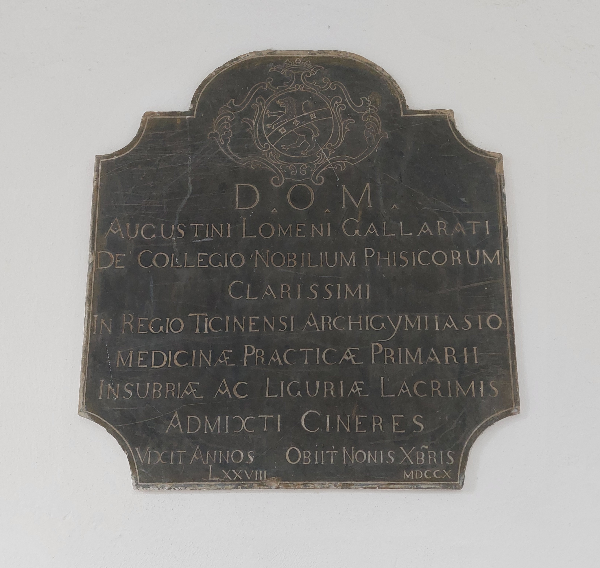

Ruolo: Professore di Medicina Pratica (1632-1710)

"A Dio Ottimo Massimo. (Qui sono) Le ceneri miste alle lacrime dell'Insubria e della Liguria di Agostino Lomeno Gallarati, del Collegio dei Nobili Medici, chiarissimo professore primario di Medicina Pratica nella Regia Università Pavese. Visse 78 anni. Morì alle Noni di dicembre del 1710."
"To God, Most Good, Most Great. (Here lie) The ashes, mingled with the tears of Insubria and Liguria, of Agostino Lomeno Gallarati, of the College of Noble Physicians, most renowned primary professor of Practical Medicine at the Royal University of Pavia. He lived 78 years. He died on the Nones of December 1710."